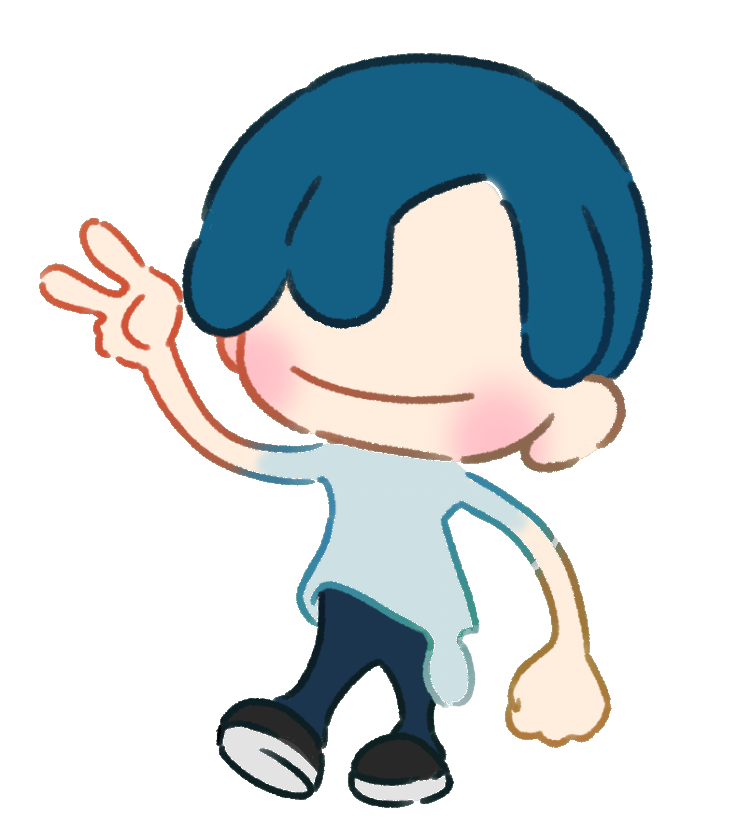

Quest Prototype
이동, 상호작용, UI 흐름을 분리된 컴포넌트로 구성하는 연습용 게임 프로토타입입니다.
GitHub에서 보기하나씩 탄탄히 쌓고, 코어 게이머의 감각으로 재미를 꾸준히 다듬습니다.


Build Archive
아직 경력보다 중요한 것은 직접 만든 결과물입니다. 작은 프로토타입부터 완성 가능한 흐름을 쌓아갑니다.
이동, 상호작용, UI 흐름을 분리된 컴포넌트로 구성하는 연습용 게임 프로토타입입니다.
GitHub에서 보기개발하면서 배운 구조, 실수, 개선점을 기록해 다음 프로젝트의 기준으로 남깁니다.
Notion 기록으로 이동플레이 가능한 빌드를 모으는 공간입니다. 배포 링크가 생길 때마다 이곳에서 바로 연결합니다.
업데이트 예정Quest Log
완성된 결과만이 아니라, 어떤 문제를 만나고 어떻게 고쳤는지를 기록하는 개발자가 목표입니다.
Controller는 흐름만, 오브젝트는 자기 역할 컴포넌트로 움직이게 만드는 연습.
Static Data와 Instance Data를 분리해서 유지보수 가능한 구조를 익히는 중.
직접 플레이하고, 불편한 지점을 기록하고, 작은 단위로 개선합니다.
Outside The Editor
스터디, 게임잼, 팀 프로젝트, 발표 경험을 모아 개발자로서의 방향성을 보여주는 공간입니다.
One Page Card
이 사이트 주소 하나로 GitHub, 프로젝트, 개발 기록, 연락처를 모두 연결합니다.
Contact Portal
프로젝트 제안, 스터디, 피드백, 협업 이야기를 환영합니다.